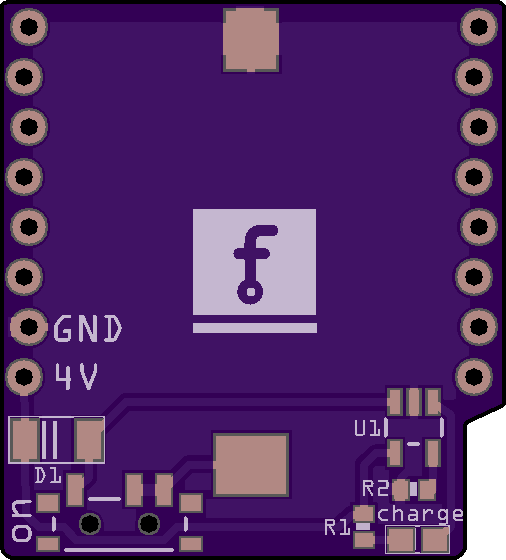

First Try¶
Published on 2019-07-04 in Coin Battery Shield for D1 Mini.
There is a battery shield for D1 Mini development board, produced and sold by Wemos, but I find it a little lacking for some specific use cases. It wastes power by boosting the battery voltage to 5V and then letting the on-board LDO bring it back to 3.3V. It has a separate USB socket for charging the battery. It doesn’t have a power switch. And most of all, it doesn’t contain an actual battery — you have to connect that separately. That means it not suitable for some really small and portable projects. So I made this.
It’s a very simple shield. It only has the battery itself, behind a shottky diode to protect it from your USB power, a charging circuit connected to the 5V pin, with an indicator diode, and a power switch. That’s it.\
There are two down-sides for using this design. First, the battery is tiny — only around 40mAh — so it won’t last long. Second, it only provides between 3.6 and 4.2V to the 5V rail, so if you have anything that actually requires 5V, it won’t work. But I think it’s still useful for certain projects.